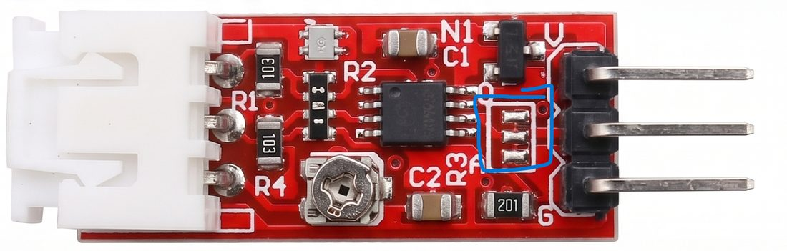
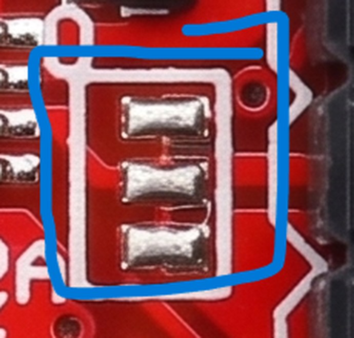
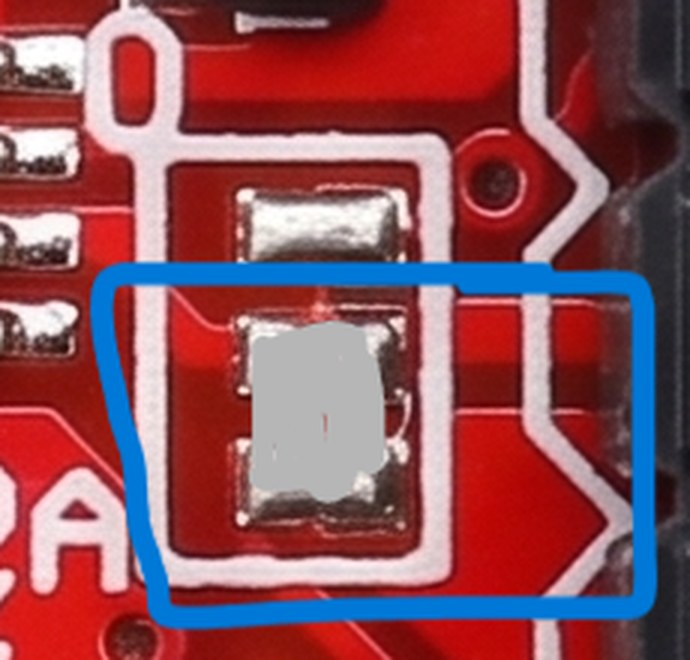

<title>Turbidity Module 0 V Fix</title>
<link rel="preconnect" href="https://fonts.googleapis.com">
<link rel="preconnect" href="https://fonts.gstatic.com" crossorigin>
<link rel="stylesheet" href="https://fonts.googleapis.com/css2?family=IBM+Plex+Mono:wght@400;500&family=IBM+Plex+Sans:ital,wght@0,400;0,500;0,600;1,400&display=swap">
<style>
/* Layout: single readable column, technical-note style; readings set in mono, callouts carry the key action. */
:root {
  --bg: #f4f7f9;
  --surface: #ffffff;
  --ink: #13202a;
  --muted: #51616d;
  --line: #d3dde4;
  --accent: #0a6b88;
  --accent-soft: #e1f0f5;
  --warn: #8f5400;
  --warn-soft: #fcf0d9;
  --stop: #a3261f;
  --stop-soft: #fbe6e4;
  --font-body: "IBM Plex Sans", system-ui, -apple-system, "Segoe UI", sans-serif;
  --font-mono: "IBM Plex Mono", ui-monospace, "Cascadia Mono", Consolas, monospace;
}
@media (prefers-color-scheme: dark) {
  :root:not([data-theme="light"]) {
    --bg: #0d1418;
    --surface: #141e24;
    --ink: #e5eef2;
    --muted: #98a9b4;
    --line: #26353e;
    --accent: #5cc3de;
    --accent-soft: #11303a;
    --warn: #f0b254;
    --warn-soft: #2d2411;
    --stop: #ff8b82;
    --stop-soft: #34191a;
    color-scheme: dark;
  }
}
:root[data-theme="dark"] {
  --bg: #0d1418;
  --surface: #141e24;
  --ink: #e5eef2;
  --muted: #98a9b4;
  --line: #26353e;
  --accent: #5cc3de;
  --accent-soft: #11303a;
  --warn: #f0b254;
  --warn-soft: #2d2411;
  --stop: #ff8b82;
  --stop-soft: #34191a;
  color-scheme: dark;
}
body {
  background: var(--bg);
  color: var(--ink);
  font-family: var(--font-body);
  font-size: 16px;
  line-height: 1.65;
  padding-inline: 16px;
  padding-block: 32px 64px;
}
main { max-width: 720px; margin-inline: auto; }
h1, h2, h3 { text-wrap: balance; line-height: 1.2; }
h1 { font-size: clamp(1.9rem, 5vw, 2.6rem); font-weight: 600; margin: 8px 0 12px; letter-spacing: -0.01em; }
h2 { font-size: 1.4rem; font-weight: 600; margin: 48px 0 12px; padding-top: 24px; border-top: 1px solid var(--line); }
h3 { font-size: 1.05rem; font-weight: 600; margin: 24px 0 8px; }
p, li { max-width: 68ch; }
p { margin: 0 0 14px; }
a { color: var(--accent); }
.eyebrow { font-family: var(--font-mono); font-size: 0.78rem; letter-spacing: 0.08em; text-transform: uppercase; color: var(--accent); }
.lede { font-size: 1.15rem; color: var(--muted); max-width: 60ch; }
.meta { display: flex; flex-wrap: wrap; gap: 6px 20px; font-family: var(--font-mono); font-size: 0.8rem; color: var(--muted); margin-top: 16px; }
.callout { background: var(--accent-soft); border: 1px solid var(--accent); border-radius: 6px; padding: 16px 18px; margin: 28px 0; }
.callout > :last-child { margin-bottom: 0; }
.callout h2 { margin: 0 0 8px; padding: 0; border: 0; font-size: 1.1rem; }
.callout.warn { background: var(--warn-soft); border-color: var(--warn); }
.callout.stop { background: var(--stop-soft); border-color: var(--stop); }
.callout .label { font-family: var(--font-mono); font-size: 0.75rem; letter-spacing: 0.08em; text-transform: uppercase; margin-bottom: 6px; display: block; font-weight: 500; }
ol, ul { padding-left: 1.3rem; }
li { margin-bottom: 8px; }
code, .mono { font-family: var(--font-mono); font-size: 0.88em; }
code { background: var(--accent-soft); padding: 1px 5px; border-radius: 3px; }
.table-wrap { overflow-x: auto; margin: 16px 0 20px; border: 1px solid var(--line); border-radius: 6px; background: var(--surface); }
table { border-collapse: collapse; width: 100%; min-width: 440px; font-size: 0.93rem; }
th, td { text-align: left; padding: 9px 14px; border-bottom: 1px solid var(--line); vertical-align: top; }
th { font-size: 0.74rem; font-family: var(--font-mono); text-transform: uppercase; letter-spacing: 0.06em; color: var(--muted); font-weight: 500; background: var(--bg); }
tr:last-child td { border-bottom: 0; }
td.num { font-family: var(--font-mono); font-variant-numeric: tabular-nums; white-space: nowrap; }
.flag { color: var(--stop); font-weight: 600; }
.good { color: var(--accent); font-weight: 600; }
figure { margin: 24px 0; }
figure img { display: block; width: 100%; height: auto; border-radius: 6px; border: 1px solid var(--line); }
.pair { display: grid; grid-template-columns: repeat(auto-fit, minmax(240px, 1fr)); gap: 12px; }
.pair > div { min-width: 0; }
.tag { font-family: var(--font-mono); font-size: 0.78rem; color: var(--muted); margin-top: 6px; }
figcaption { font-size: 0.85rem; color: var(--muted); margin-top: 8px; }
blockquote { margin: 16px 0; padding: 4px 0 4px 16px; border-left: 3px solid var(--line); color: var(--muted); max-width: 64ch; }
.toc { display: flex; flex-wrap: wrap; gap: 6px 16px; font-size: 0.9rem; margin: 20px 0 0; padding: 0; list-style: none; }
.toc li { margin: 0; }
a:focus-visible { outline: 2px solid var(--accent); outline-offset: 2px; }
</style>

<main>
  <header>
    <div class="eyebrow">Field note for buyers and makers</div>
    <h1>My turbidity sensor module read 0 V. Here is the fix.</h1>
    <p class="lede">A 3-pin turbidity module powered at 5 V gave no output at all. Two of four units I bought needed a small solder bridge between two pads before they worked. No seller page mentioned it.</p>
    <div class="meta">
      <span>Tested: October 2026</span>
      <span>Units: 4 (2 dead as received, 2 working)</span>
      <span>Supply: 5 V</span>
    </div>
    <ul class="toc">
      <li><a href="#short">Short answer</a></li>
      <li><a href="#module">Is this your module?</a></li>
      <li><a href="#symptom">The symptom</a></li>
      <li><a href="#fix">The fix</a></li>
      <li><a href="#results">Results</a></li>
      <li><a href="#unknown">What is not known</a></li>
      <li><a href="#esp32">Connecting to a microcontroller</a></li>
    </ul>
  </header>

  <div class="callout" id="short">
    <h2>Short answer</h2>
    <p>If your red turbidity module has power but its <strong>OUT pin stays at 0 V</strong>, look at the small boxed area of three pads next to the header, beside the letters <strong>O</strong> and <strong>A</strong> on the silkscreen. On my two working modules, the <strong>middle and bottom pads</strong> in that box were joined by solder. On my two dead modules, all three pads were separate.</p>
    <p>I joined the middle and bottom pads on both dead units to match the working ones. Both then produced a voltage that changed with air, water and other liquids.</p>
  </div>

  <h2 id="module">Is this your module?</h2>
  <p>This note covers one board design. Check that yours matches before you touch it.</p>
  <ul>
    <li>Red circuit board, narrow, with a white 3-pin connector for the probe on one end.</li>
    <li>Three header pins on the other end, labelled <strong>V</strong> (VCC), <strong>O</strong> (OUT) and <strong>G</strong> (GND) on the top side.</li>
    <li>The back is marked <strong>"Turbidity module MJKDZ"</strong>.</li>
    <li>One small 8-pin chip, one blue trim potentiometer, a small transistor-style part marked N1, and a boxed footprint of three small pads beside the pin marked O.</li>
    <li>No A/D slide switch. Guides written for other turbidity boards that mention a switch do not apply here.</li>
  </ul>
  <figure>
    
    <figcaption>Figure 1. The module, top side, as the dead units arrived. The circled box of three separate pads sits between the 8-pin chip and the header.</figcaption>
  </figure>

  <h2 id="symptom">The symptom</h2>
  <p>With 5 V on VCC and GND, the multimeter showed about 5 V between VCC and GND, as expected. Between OUT and GND it showed <span class="flag">0 V</span>, in air and in water, with the probe connected. Nothing I changed moved it.</p>

  <h3>What the chip was doing</h3>
  <p>I could not read the marking on the 8-pin chip. I measured it using the standard pinout shared by common dual comparators and op-amps (LM393 and LM358 use the same layout). All readings are volts to GND, powered, on one unit, before any modification.</p>
  <div class="table-wrap">
    <table>
      <thead><tr><th>Point</th><th>Volts</th><th>Note</th></tr></thead>
      <tbody>
        <tr><td>Module VCC</td><td class="num">≈ 5</td><td>Supply fine</td></tr>
        <tr><td>Chip pin 8</td><td class="num">5.06</td><td>Chip supply</td></tr>
        <tr><td>Chip pin 4</td><td class="num">0</td><td>Chip ground</td></tr>
        <tr><td>Pin 1</td><td class="num">5.06</td><td>First output</td></tr>
        <tr><td>Pin 2</td><td class="num">3.88</td><td>Input</td></tr>
        <tr><td>Pin 3</td><td class="num">3.87</td><td>Input</td></tr>
        <tr><td>Pin 5</td><td class="num">3.82</td><td>Input</td></tr>
        <tr><td>Pin 6</td><td class="num">3.88</td><td>Input</td></tr>
        <tr><td>Pin 7</td><td class="num">≈ 3.8</td><td>Second output</td></tr>
        <tr><td>Module OUT pin</td><td class="num flag">0</td><td>The problem</td></tr>
      </tbody>
    </table>
  </div>
  <p>The chip had power, its inputs sat at sensible voltages and its outputs were not dead. Yet the OUT pin was at 0 V. A working signal was reaching the chip but not the pin. That pattern points to a missing link on the board between the chip and the output pin.</p>
  <p>Power-off continuity tests agreed. Ground points beeped to each other, but neither chip output pin (1 or 7) beeped to the OUT pin. A silent buzzer alone does not prove a break, since a resistor in the path can also stay silent. It was consistent with the other readings.</p>

  <h2 id="fix">The fix</h2>

  <div class="callout stop">
    <span class="label">Before you solder</span>
    <p>This modifies the board and may void a return. If the module is still within the seller's return window, ask for a replacement first. Only continue if you are comfortable soldering very small pads.</p>
  </div>

  <ol>
    <li><strong>Unplug everything.</strong> Remove power and the signal wire to your microcontroller.</li>
    <li><strong>Find the boxed pads.</strong> They sit between the 8-pin chip and the header, next to the letters O and A. There are three small rectangles stacked in a column.</li>
    <li><strong>Compare with Figure 2.</strong> On the dead units all three pads were separate. On the working units, the middle and bottom pads were joined into one block of solder, and the top pad was left alone.</li>
    <li><strong>Bridge the middle and bottom pads with a small amount of solder.</strong> Use a fine tip. Do not touch the top pad, and keep the solder inside the box.</li>
    <li><strong>Check for shorts with power still off.</strong> Set the meter to resistance. OUT to GND and OUT to VCC should not read near 0 Ω. If either does, the solder has touched something it should not. Reflow and clean it.</li>
    <li><strong>Power on and read OUT.</strong> Use 5 V and the multimeter on DC volts. You should now see a voltage. Move the probe from air into clean water, then into a cloudy liquid. The reading should change.</li>
  </ol>
  <figure>
    <div class="pair">
      <div>
        
        <div class="tag">As received on the dead units</div>
      </div>
      <div>
        
        <div class="tag">Working state: middle and bottom pads joined</div>
      </div>
    </div>
    <figcaption>Figure 2. The three-pad box. Left: all pads separate, which gave 0 V at OUT. Right: middle and bottom pads joined, as on the working units. The images are marked-up product photographs, and the joined solder on the right is drawn as an illustration.</figcaption>
  </figure>

  <h2 id="results">Results</h2>
  <div class="table-wrap">
    <table>
      <thead><tr><th>Unit</th><th>Bought from</th><th>As received</th><th>After bridging middle and bottom pads</th></tr></thead>
      <tbody>
        <tr><td>1</td><td>Robu.in</td><td class="flag">OUT 0 V, pads separate</td><td class="good">Output present; changes with air, water, other liquids</td></tr>
        <tr><td>2</td><td>Robu.in</td><td class="flag">OUT 0 V, pads separate</td><td class="good">Output present; changes with air, water, other liquids</td></tr>
        <tr><td>3</td><td>Robocraze</td><td class="good">Output present, pads already joined</td><td>Not modified</td></tr>
        <tr><td>4</td><td>Robocraze</td><td class="good">Output present, pads already joined</td><td>Not modified</td></tr>
      </tbody>
    </table>
  </div>
  <p>The repaired units behaved like the Robocraze units. That is two repairs out of two attempts, matching two units that worked out of the box.</p>
  <p>The two units with joined pads came from Robocraze, and the two with open pads came from Robu.in. That points to a supplier or production batch difference, though four units cannot show which. I did not contact either seller, so this says nothing about how either one handles returns or whether other units from them are affected.</p>

  <h2 id="why">Why this was so hard to find</h2>
  <p>None of the seller pages I read said which chip the module uses, what the output voltage range is, or that any pads must be bridged. A typical listing looks like this:</p>
  <blockquote>Provides both digital and analog output. Trimpot for sensitivity adjustment. Operating voltage 5 VDC, working current 30 mA max, response time under 500 ms.</blockquote>
  <p>That is all a buyer gets. It says there are two output types, but the board has only one OUT pin and no switch. It gives no pinout, no output range and no hint that a dead unit could be fixed with solder. I spent days testing wiring, the supply, the probe and the chip before I looked at the pads.</p>
  <p>If you are stuck on a similar module, this is the order I would follow now:</p>
  <ol>
    <li>Measure the supply between VCC and GND at the module.</li>
    <li>Measure OUT to GND in air and in water.</li>
    <li>If OUT is 0 V, look for open pads or jumper footprints near the output pin before you suspect the chip.</li>
    <li>With power off, compare the board against a working unit under magnification.</li>
  </ol>

  <h2 id="unknown">What is not known</h2>
  <p>This is a bench note on four units from the same product family, not a study. These points are open:</p>
  <ul>
    <li><strong>The chip type.</strong> The marking was not readable. It behaves like an 8-pin dual comparator or op-amp. I have not confirmed which one.</li>
    <li><strong>What the pads do.</strong> The silkscreen letters O and A, together with the listing's claim of analog and digital output, suggest the pads may choose the output mode. I have not tested bridging them one at a time to find out.</li>
    <li><strong>Whether this is a defect or an option.</strong> The pads were open on two units and joined on two others. I do not know if the manufacturer intends them to be open, or if the dead units missed a production step.</li>
    <li><strong>The output range.</strong> I have not published a full voltage curve against turbidity.</li>
    <li><strong>Seller confirmation.</strong> I have no manufacturer statement about any of this.</li>
  </ul>

  <h2 id="esp32">Connecting it to a microcontroller</h2>
  <div class="callout warn">
    <span class="label">Check before wiring</span>
    <p>The ESP32-C3 and many other 3.3 V boards cannot take 5 V on an analog input. Measure the highest OUT voltage first, in air, with the module on 5 V. Do not connect OUT to the board until you know it.</p>
  </div>
  <p>If OUT can go above 3.3 V, use a voltage divider. For example, 10 kΩ from OUT to the input pin and 20 kΩ from the input pin to GND scales 4.5 V down to 3.0 V. If your highest reading is 5 V, the same divider gives about 3.3 V, which is too close to the limit. Pick values that bring your own highest reading safely under it, and check the board's ADC range, which is often lower than the supply voltage.</p>

</main>
